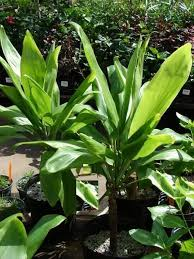

الأريكا الصفراء ينتمى هذا النبات إلى نخيل الزينة وتتميز الأريكا بكونها غير مزهرة وفى الوقت نفسه تعيش لسنوات طويلة، فضلاً عن أوراقها ذات الملمس الكريمى الذى من شأنه أن يخفف الطاقة السلبية بأى مكان.
الأريكا الصفراء
"ليدى بالم" أو سيدة النخيل
يعتبر من أهم النباتات المنقية للهوء والتى يضاف إلى مميزاتها قدرتها الكبيرة على مقاومة الحشرات وتحملها للمناخ الجاف، كما تتميز بانتشارها الواسع وسهولة العناية بها.
سيدة النخيل
الشاميدوريا أو نبات العنكبوت، وهى أيضًا من العائلة النخيلية وهى تنمو فى الأماكن الظليلة الرطبة ورغم احتياجها لإضاءة قوية إلا إنها تتحمل أن تعيش داخل البيوت فى إضاءة منخفضة، وتتميز هى الأخرى بمقاومتها للحشرات.
الشاميدوريا
نبات المطاط يعد واحدًا من النباتات المنزلية التى تتحمل أجواء البيت الدافئة والرطوبة المنخفضة، كما يمكنه البقاء على قيد الحياة فى الضوء الخافت والبرودة وله قدرة ممتازة على إزالة السموم من أى بيئة فى الأماكن المغلقة.
نبات المطاط
دراسينا جنت
من النباتات المنزلية التى تنمو فى الجو المعتدل والرطوبة العالية، ونباتات الدراسينا بشكل عام يمكن وضعها فى أماكن بها ضوء قوى أو فى أماكن نصف ظليلة، إلا أن نوع "دراسينا جنت" تحديدًا من التى تحتاج إلى الظل، وينمو فى الضوء المنخفض جدًا، وهو أيضًا يساعد فى إزالة السموم الكيمائية من البيت.
دارسينا جنت

نبات الأفعى
موطنه الأصلي أفريقيا الغربية الاستوائية، وله عدة أنواع تختلف في أحجامها ودرجات تلون أوراقها، ينمو في الضوء الساطع كما في الظل الخفيف أيضاً. ويفضل أن يكون قريباً من النافذة حيث الضوء والدفء.
يفضل أن يزرع هذا النبات في أصص فخارية، ويروى باعتدال في الصيف.
نبات الأفعى
نبات فيكس بنجامينا
وهي شجيرة يتراوح طولها من 20سم إلى 200سم
تحتاج إلى ضوء ساطع طوال العام، ويفضل وضعها في مكان مشمس شتاءً وتسميدها كل أسبوعين، تروى باعتدال، مع تقليل الري في الشتاء. كما تحتاج لدرجة حرارة الغرفة، محبة للرطوبة
نبات فيكس بنجامينا
الألوفيرا
نبات داخلي رائع، ودواء رائع للحروق كما يستخدم للكثير من الأغراض التجميلية. يفضل وضعه بجانب النافذة ويروى بانتظام.
تعتبر الألوفيرا من أهم الأدوية الّتي كانت تستخدم في القرن الثامن عشر والقرن التاسع عشر لعلاج مشاكل الشعر والبشرة المختلفة،
مهم جداً لصحة الكلى والكبد بسبب إحتوائه على نسبة كبيرة من السوائل التى تعمل على ترطيب الجسم
الألوفيرا
الأوركيد
نبات داخلي مزهرة بألوان عدة وجذابة جداً منها الأبيض ودرجات الزهري والبنفسجي والأصفر. موطنها جنوب شرق آسيا والهند والفلبين واستراليا الشمالية، ويشمل عدد كبير من الأنواع ، أوراقها منبسطة سميكة خضراء غامقة تحيط بحامل الأزهار محبة للضوء دون التعرض لأشعة الشمس المباشرة تروى فقط عندما تكون تربتها شبه جافة فقط تقريباً بمعدل مرة واحدة في الأسبوع خلال وقت الإزهار و كل عشرة أيام عندما تكون بدون إزهار.
الأوركيد
البامبو أو النبتة جالبة الحظ نبتة خضراء رائعة تضفي المزيد من الجمال على المكان. ينتشر في كافة أرجاء آسيا و أفريقيا و استراليا وأمريكا الشمالية والجنوبية لا يحتاج ضوء الشمس المباشر ولا يحتاج الى تسميد ويمكنه العيش في الماء
البامبو
نبات القفص الصدري
وطنه الأصلي أمريكا الوسطى، البالغ منه يتميز بشقوق في الأوراق الكبيرة لتجعلها على شكل القفص الصدري يناسبه درجة حرارة الغرفة.
تروى بغزارة في الصيف خاصة. تحب الضوء الساطع و الرطوية وترش النبتة باستمرار بالرذاذ على فترات متقاربة خاصةً في الصيف.
نبات القفص الصدري
زهرة زنبق السلام
يعد من أفضل النباتات التى يمكن استخدامها فى المنازل والمكاتب، لأنها من النباتات المعمرة، وتحافظ على شكلها ولونها الأخضر لأطول فترة ممكنة، وهى لا تحتاج إلى كمية كبيرة من المياه والضوء، بالإضافة إلى أنها تعمل على تنقية الهواء من أى ميكروبات به.
زنبق السلام
نبات القهوة Coffea
تعد من النباتات التى تطلق روائح عطرة فى مكان زراعتها، تأتى حبوب القهوة من عدة أنواع من الشجيرات، ويتم حصادها بعد السنة الخامسة أو السادسة، لذلك يفضل شرائها بعد نموها بشكل كامل، وهى تحتاج إلى مراعاة خاصة بالإضافة الى درجة حرارة معينة فى الظل.
القهوة
نبات الأس Myrtus
الآس الشائع
يعتبر نبات الآس هو رمز للسلام والسرور، فى الماضى كان يعتقد الناس أن هذا النبات كان مقدساً وأنه كان قادر على إعطاء كبار السن شبابهم مرة أخرى، ويوفر للمسافرين الطاقة معنوية جيدة.
لكن اليوم هناك فوائد علمية له، فإنه يعمل على تأهيل المناخ الصحى بالمنزل حيث تخرج بعض العطور من أوراق الشجر الآس تساعد على قتل الميكروبات فى الهواء
نبات الآس

نبات الغار Laurus nobilis
من النباتات المعمرة يعود موطنه إلى دول البحر الأبيض المتوسط وهذا هو السبب فى أنه يحب الهواء الرطب والظل، وكمية كبيرة من الماء الدافئ، حيث أنه يعمل على امتصاص الرطوبة من الجو، بالإضافة الى إمكانية تجفيف أوراقه واستخدمها كنوع من أنواع التوابل فى الطبخ.
نبات الغار
نبات سرو الكاذب Chamaecyparis
يعتبر من الأشجار المقدسة فى اليابان ويعتقد أن أرواح الموتى والآلهة تستقر داخلها، هذا النبات دائم الخضرة ينعش حيث ينمو فى الظل ويحتاج إلى تربة رطبة كما أنه يساعد على التخلص من الأوساخ، بالإضافة إلى أنه يخفف من أعراض الصداع النصفى.
السرو الكاذب
نبات الجن ثلاثي الأحزمة Sansevieria هذا النبات يعد من النباتات الأكثر نفعاً حيث يعمل على إنعاش الهواء،وإنتاج كمية كبيرة من الأكسجين، ويحد من الأدخنة الضارة التى تنتجها المواد الاصطناعية، هذا بالإضافة الى سهلة الرعاية به لأنه يحتفظ بالرطوبة فى أوراقها، كما أنه لا يتطلب الكثير من الرى.
نبات الجن